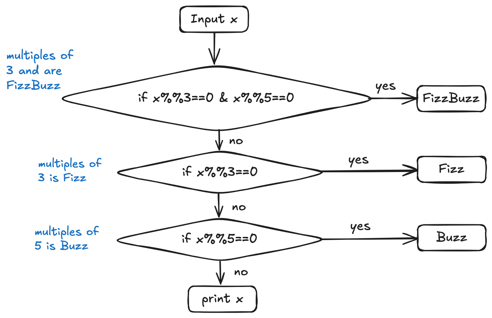

You can answer the questions below in either R or Python. I will give you 50% extra credit if you provide answers in both languages. Otherwise, please feel free to delete the code chunks corresponding to the language you don’t wish to work in.
Once you have finished this assignment, render the document (Ctrl/Cmd-Shift-K or the Render button).
Commit the qmd file and any other files you have changed to the repository and push your changes.
In Canvas, submit a link to your github repository containing the updated files.
Introduction to Fizzbuzz
The “FizzBuzz Test” is a famous programming interview question.
Write a program that prints the numbers from 1 to 30. But for multiples of three print “Fizz” instead of the number and for the multiples of five print “Buzz”. For numbers which are multiples of both three and five print “FizzBuzz”
Start by filling in the following table for the numbers 1:30 manually, to get a feel for the task.
Fizzbuzz for 1:30
Input
Output
1
1
2
2
3
Fizz
4
4
5
Buzz
6
Fizz
7
7
8
8
9
Fizz
10
Buzz
11
11
12
Fizz
13
13
14
14
15
FizzBuzz
16
16
17
17
18
Fizz
19
19
20
Buzz
21
Fizz
22
22
23
23
24
Fizz
25
Buzz
26
26
27
Fizz
28
28
29
29
30
FizzBuzz
On paper or using a tool such as https://excalidraw.com, create a program flow map for the sequence of if-statements you need to evaluate for fizzbuzz. Add the picture to the folder containing this file, and name the picture flowchart.png. Add the picture to Git and commit/push your changes.

Program Flow map for FizzBuzz
In the chunk below, write code which will solve this problem for a single value x. You should be able to change the value of x at the top of the chunk and still get the correct answer.
x <-3# FizzBuzz code goes hereFizzBuzz <-function(x){## write FizzBuzz first (if it is TRUE) otherwise I cannot get the output of FizzBuzz when x=15if (x%%3==0& x%%5==0) {print("FizzBuzz") } elseif (x%%3==0) {print("Fizz") } elseif (x%%5==0) {print("Buzz") } else {print(x) }}FizzBuzz(x)
[1] "Fizz"
#FizzBuzz(5)#FizzBuzz(15)
## If I do not use a function, a if statement would work ...x <-3# FizzBuzz code goes hereif (x%%3==0&& x%%5==0){print("FizzBuzz") } elseif (x%%3==0){print("Fizz") } elseif (x%%5==0){print("Buzz") } else{print(x) }
## If it is not a function, another way to solve the problem is:import numpy as npx =3# FizzBuzz code goes hereif (x%3==0) & (x%5==0):print("FizzBuzz")elif x%3==0:print("Fizz")elif x%5==0:print("Buzz")else: x
Fizz
Modify the code above so that the result is stored in a value y.
x <-3y <-NA# FizzBuzz code goes hereif (x%%3==0&& x%%5==0){ y <-"FizzBuzz" } elseif (x%%3==0){ y <-"Fizz" } elseif (x%%5==0){ y <-"Buzz" } else{ y <- x}print(paste("For x = ", x, " my code produces ", y, sep =""))
[1] "For x = 3 my code produces Fizz"
import numpy as npx =3y = np.nan# FizzBuzz code goes hereif (x%3==0) & (x%5==0): y ="FizzBuzz"elif x%3==0: y ="Fizz"elif x%5==0: y ="Buzz"else: y = xprint("For x = "+str(x)+" my code produces "+str(y))
For x = 3 my code produces Fizz
A vector of FizzBuzz
The code in the previous problem only solves FizzBuzz for a single value of x. Extend your code using a loop so that it will work for all values in a vector xx, storing values in a corresponding vector yy.
You can copy/paste code from previous chunks to make this chunk easier.
xx <-1:30#is intyy <-rep(NA, times =30) #here, yy is logical# FizzBuzz code goes herefor (i in1:length(xx)){ #1:length() same as seq_alongif (xx[i]%%3==0&& xx[i]%%5==0){ yy[i] <-"FizzBuzz" }elseif (xx[i]%%3==0){ yy[i] <-"Fizz" }elseif (xx[i]%%5==0){ yy[i] <-"Buzz" }else{ yy[i] <- xx[i] }}# Printing the results in a data frameres <-cbind(x = xx, result = yy) #res #is int before modify## Discussion:## The output of the res has quotes, then we can remove the quotes.## I had try to do convert such as.logical before printing the results but could not get the output similar to the instruction## Finally, add the following code to obtain the results in a data frameres <-data.frame(res);res
import pandas as pdxx = np.array(range(30)) +1yy = [np.nan]*30# FizzBuzz code goes herefor i inrange(len(xx)): if (xx[i]%3==0) and (xx[i]%5==0): yy[i] ="FizzBuzz"elif xx[i]%3==0: yy[i] ="Fizz"elif xx[i]%5==0: yy[i] ="Buzz"else: yy[i] = xx[i]# Alternative way#for i in xx: # i in index rather than in XX# if (i%3 == 0) & (i%5 == 0):# yy[i-1] = "FizzBuzz" # elif i%3 == 0:# yy[i-1] = "Fizz"# elif i%5 == 0:# yy[i-1] = "Buzz"# else:# yy[i-1] = i# Printing the results in a data frameres = pd.DataFrame({"x": xx, "result": yy})res
In the previous question, you extended your fizzbuzz code to iterate through a vector xx and produce a result yy. Can you generalize this, writing a function fizzbuzz that takes a variable x and returns a corresponding fizzbuzzified variable? Your function should be able to handle x that is a vector or a scalar value, and should store your solution in yy.
xx <-sample(1:100, 10) # get a random xx (int)yy <-rep(NA, 10)fizzbuzz <-function(x) {# Your code goes here##Ref: seq_along() creates a sequence from 1 up to the length of its inputfor (i inseq_along(xx)) {## modular division xx[]/3if (xx[i]%%3==0& xx[i]%%5==0){ yy[i] <-"FizzBuzz" } elseif (xx[i]%%3==0){ yy[i] <-"Fizz" } elseif (xx[i]%%5==0){ yy[i] <-"Buzz" } else yy[i] <- x[i] }return(yy)}yy <-fizzbuzz(x = xx)# Printing the results in a data frameres <-cbind(x = xx, result = yy)#res## I got same issue to print results in a data frame: quotes in the output## Using data.frame() function again.res <-data.frame(res);res
import pandas as pdimport numpy as npfrom random import choicesxx = np.array(choices(range(100), k =10)) +1def fizzbuzz(x): y = [np.nan]*len(x) # this just defines something to return# Your code goes here## Fix IndexError: range((len)())for i inrange(len(x)):if (x[i]%3==0) & (x[i]%5==0): y[i] ="FizzBuzz"elif x[i]%3==0: y[i] ="Fizz"elif x[i]%5==0: y[i] ="Buzz"else: y[i] = x[i]return yyy = fizzbuzz(x = xx)# Printing the results in a data frameres = pd.DataFrame({"x": xx, "result": yy})res
You cannot always assume that the person using your functions knows what they’re doing. Add a check to the function you wrote in the last question so that it will handle non-numeric input by issuing an error message.
In Python, you can use a try: statement with a except: clause. This functions like an if-else statement, where if no error occurs, the except statement is never executed.
try: int("hello")exceptValueError: print("Error: could not turn value into an integer")
Error: could not turn value into an integer
See more examples of this in the Input Validation section of the textbook.
xx <-sample(1:100, 10) # get a random xxyy <-rep(NA, 10)fizzbuzz <-function(x) {# Your code goes here##check x is numericstopifnot(is.numeric(x))##check x is positive (x>=1)stopifnot(x>0)##check length stopifnot(length(x) ==length(yy))##Same as previousfor (i inseq_along(xx)) {if (xx[i]%%3==0& xx[i]%%5==0){ yy[i] <-"FizzBuzz" } elseif (xx[i]%%3==0){ yy[i] <-"Fizz" } elseif (xx[i]%%5==0){ yy[i] <-"Buzz" } else yy[i] <- x[i] }return(yy)}yy <-fizzbuzz(x = xx)# Printing the results in a data frameres <-cbind(x = xx, result = yy)#res## convert outputs in a data frameres <-data.frame(res); res
The order of each statement of ‘stopifnot’ is important in the above code. I followed the questions to check input validation:
Are inputs numeric?
Are inputs positive (Inputs are sampled from 1:100)?
Are input has same length as output?
import pandas as pdfrom random import choicesxx = np.array(choices(range(100), k =10)) +1def fizzbuzz(x):## Input must be an arraytry:ifnotisinstance(x, np.ndarray):raiseTypeError("x (input) must be an array") y = [np.nan]*len(x) # this just defines something to return# Your code goes here## input for i inrange(len(x)):if (x[i]%3==0) & (x[i]%5==0): y[i] ="FizzBuzz"elif x[i]%3==0: y[i] ="Fizz"elif x[i]%5==0: y[i] ="Buzz"else: y[i] = xx[i]return y## except Exception,e [See reference]## print eexceptTypeErroras e:print(e)yy = fizzbuzz(x = xx)# Printing the results in a data frameres = pd.DataFrame({"x": xx, "result": yy})res
Get a Try statement to loop around until correct value obtained. https://stackoverflow.com/questions/2244270/get-a-try-statement-to-loop-around-until-correct-value-obtained
Errors and Exceptions. https://docs.python.org/3/tutorial/errors.html